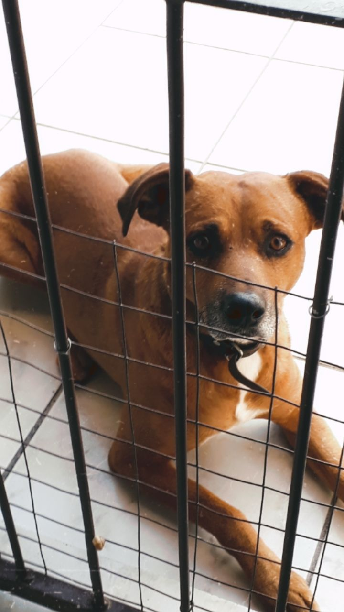
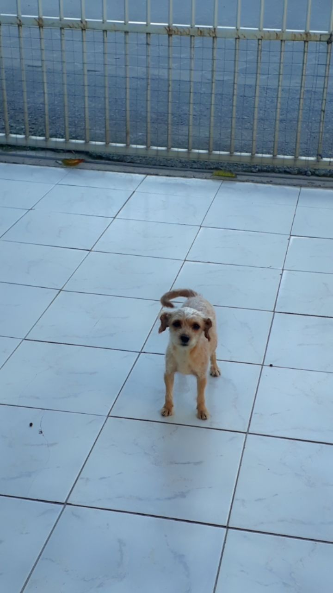

Faísca tem uns 2 anos. Ele é arteiro que nem o Rock (deve ser coisa de vira lata caramelo novinho),
uma vez o Faísca roubou 2 calçados de uma casa e meus avós não encontraram o dono pra devolver.
Ele gosta de morder de brincadeira, mas é um amor.

Thor é grandao, com um coração maior ainda, gosta de pular e abraçar os outros, e as vezes quase derruba a pessoa.
Ele tem algumas cicatrizes de antigamente, mas agora encontrou uma família que da o carinho que ele merece.

Tuniquinho é o mais novo integrante, quando chegou era arisco e esquisitinho, agora está lindo, arrumado e alegre.
O pequeninho ama ganhar colo.